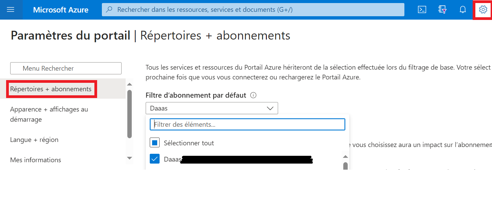

FAQ
Ingestion de données
Comment puis-je ingérer des données (y compris des fichiers volumineux) dans la plateforme?
Compte de stockage externe
Les fichiers peuvent être téléversés dans dans le conteneur inbox ou to-vers-int d'un compte de stockage externe, comme indiqué dans l'[ Explorateur de stockage Azure ] (AzureStorage.md). Ces fichiers seront alors automatiquement transférés dans un compte de stockage interne (Data Lake) et rendus accessibles à partir des services autorisés.
Remarque: Les comptes de stockage externe ont la convention de dénomination statsproject-acronymexternal.
Service de transfert électronique de fichiers (TEF)
Les employés de Statistique Canada peuvent utiliser le TEF pour transférer des fichiers de / vers les réseaux sur site (Rés. A ou B) vers / depuis l'environnement infonuagique Azure. Veuillez communiquer avec l'équipe de soutien par l'intermédiaire du canal Slack pour plus d'information sur ce processus.
Outils de plateforme
Des outils de plateforme comme Databricks ou Data Factory peuvent être utilisés pour ingérer des données provenant de sources dedonnées publiques.
Explorateur de stockage
Comment puis-je configurer les paramètres du proxy de l'Explorateur de stockage Azure sur un VDI du réseau B?
Pour les employés de Statistique Canada seulement
-
La configuration des paramètres du proxy est nécessaire, si vous recevez le message d'erreur suivant :

-
Dans l'Explorateur de stockage Azure, allez à Modifier
-
Paramètres du proxy. Entrez les paramètres du proxy nécessaires et cliquez sur OK.
Comment puis-je demander un nouveau jeton SAP (requis pour l'Explorateur de stockage Azure sur un VDI du réseau B)?
Pour les employés de Statistique Canada seulement
Pour demander un jeton SAP temporaire, veuillez communiquer avec l'équipe de soutien par l'intermédiaire du canal Slack.
Pourquoi est-ce que j'obtiens un message d'erreur lorsque j'accède au compte de stockage interne Data Lake?
Le compte de stockage interne Data Lake n'est accessible qu'à partir d'une machine virtuelle dans l'Environnement d'analyse collaboratif (EAC). Il n'est pas accessible à partir de votre ordinateur personnel, ni de votre ordinateur portable de travail, ni du VDI du réseau B, ni d'une autre machine virtuelle sur nuage.
Contrôle de code source
Comment puis-je relier mon compte Visual Studio à mon compte infonuagique de StatCan?
-
Connectez-vous à votre compte Visual Studio sur le site https://visualstudio.microsoft.com/fr/subscriptions/ en utilisant l'adresse électronique de votre organisation. Pour les employés de StatCan, il s'agit de votre adresse électronique qui se termine par « canada.ca ».

-
Ajoutez votre compte infonuagique comme compte secondaire. Vous pourrez ainsi utiliser vos licences pour Visual Studio et Azure DevOps dans l'EAC.

Pour les employés de Statistique Canada : Si vous n'avez pas d'abonnement Visual Studio, veuillez communiquer avec votre superviseur. S'il décide que vous avez besoin d'un abonnement, il pourra alors soumettre une demande de soutien en votre nom auprès de la Gestion des biens logiciels de StatCan pour vous obtenir une licence.
Machines virtuelles
Que dois-je faire si j'ai oublié le mot de passe de ma machine virtuelle?
Si vous oubliez le mot de passe de votre machine virtuelle, veuillez communiquer avec l'équipe de soutien par l'intermédiaire du canal Slack pour réinitialiser votre mot de passe.
Vous pouvez également supprimer votre machine virtuelle, puis en créer une autre. Ce faisant, vous perdrez malheureusement les données et les logiciels sur votre ancienne machine.
Que dois-je faire si je dois exécuter un travail de longue durée sur ma machine virtuelle?
Les machines sont arrêtées tous les jours à 19 h (HNE), afin de réduire les frais d'exploitation. Pour exécuter un travail de longue durée, il est recommandé d'utiliser Databricks ou Data Factory.
AVERTISSEMENT : Il n'est pas recommandé de désactiver l'arrêt automatique, car cela pourrait entraîner des frais importants.
Pour désactiver l'arrêt automatique :
-
Accédez à votre machine virtuelle dans le portail Azure.
-
Désactivez l'arrêt automatique.
Comment puis-je apporter des changements à ma machine virtuelle?
Si la machine virtuelle que vous utilisez actuellement ne répond pas à vos besoins, veuillez communiquer avec l'équipe de soutien par l'intermédiaire du canal Slack.
Databricks
Pourquoi suis-je incapable d'exécuter le code à partir de mon notebook dans Databricks?
Vous devez d'abord démarrer un cluster dans Databricks qui a déjà été créé pour vous : 1. Cliquez sur Clusters.
-
Naviguez vers votre cluster et cliquez sur le bouton Démarrer (icône de la flèche).
Quels types de clusters sont disponibles dans Databricks?
Voir le lien suivant pour les différents types de clusters disponibles: https://docs.microsoft.com/en-us/azure/databricks/release-notes/runtime/releases#:~:text=Supported%20Databricks%20runtime%20releases%20and%20support%20schedule%20,Sep%2002%2C%202021%20%2022%20more%20rows%20
Que se passe-t-il lorsque les clusters sont mis à niveau?
LTS (support à long terme) a un support pendant 1-2 ans. Ils devront être périodiquement mis à jour vers une version plus récente. Lors de la mise à niveau, tout le code doit être réexécuté pour s'assurer qu'il n'y a pas de problèmes lors de la mise à jour d'un cluster.
Comment lire un fichier excel avec databricks/python?
Voici un exemple de lecture dans un fichier excel :
%python
import pandas as pd
pd.read_excel("/dbfs/mnt/ccei-ccie-ext/Daily charts.xlsx", engine='openyxl')
Tableau de bord
Comment changer mon abonnement pour voir mes ressources?
-
Dans le portail Azure, cliquez sur l'icône Répertoire + abonnement.

-
Sélectionnez l'abonnement vdl.
Autre
Comment puis-je me connecter au compte de stockage interne Data Lake avec Power BI Desktop?
Prérequis: - Une machine virtuelle dans l'Environnement d'analyse collaborative (EAC). - Power BI Desktop. (Offert par défaut dans les images de machine virtuelle Data Science Virtual Machine.)
Étapes:
- Connectez-vous à votre machine virtuelle dans l'EAC.
- Lancez Power BI Desktop.
- Suivez les étapes dans Analysez des données dans Azure Data Lake Storage Gen2 avec Power BI - Créer un rapport dans Power BI Desktop (document anglais). S.v.p. envoyez un message à Slack si vous ne connaissez pas l'URL du Azure Data Lake Storage Gen2.
Comment les employés de Statistique Canada peuvent-ils transférer des fichiers de leur centre de données?
Pour les employés de Statistique Canada, ils peuvent se référer à cette documentation interne: Data Ingestion
Comment puis-je ajouter une question à la FAQ?
Veuillez faire parvenir votre suggestion de question par l'intermédiaire du canal Slack.